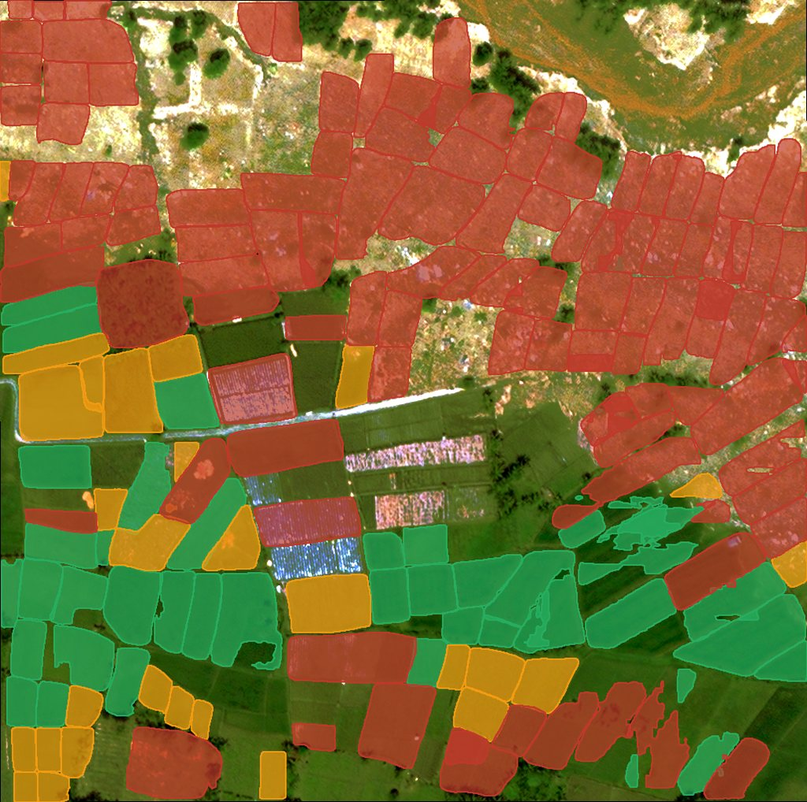
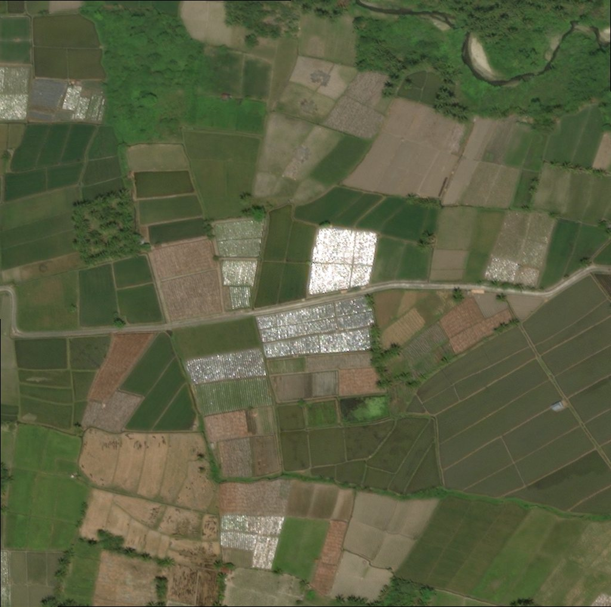

Menilai kerusakan setiap petak lahan pertanian dari citra satelit
Mask R-CNN membentuk poligon petak, Random Forest menilai kerusakannya. Studi kasus gempa, tsunami, dan likuifaksi Palu 2018.


Lahan pertanian ikut menjadi korban, dan bagian dari bencana itu sendiri
Di Lembah Palu, irigasi padi sawah menaikkan muka air tanah sehingga guncangan gempa memicu aliran tanah berskala besar. Survei lapangan lambat, dan pemanfaatan citra satelit selama ini berfokus pada bangunan.
sawah terdampak di Palu dan Sigi, dipetakan melalui interpretasi visual dan survei lapangan.
korban jiwa gempa, tsunami, dan likuifaksi 28 September 2018Cilia dkk. (2021)
rata-rata porsi sektor pertanian dalam total dampak bencana lintas sektor (PDNA 2007-2022)FAO (2023)
kemiringan lereng yang sudah cukup memicu aliran tanah pada lahan beririgasiBradley dkk. (2019)
18 pasang citra, 3.271 petak berlabel
Citra resolusi sangat tinggi sebelum dan sesudah bencana diambil dari subset palu-tsunami dataset xBD. Setiap petak sawah, ladang, dan tegalan didigitasi manual, lalu dinilai dari proporsi luasnya yang menunjukkan indikasi kerusakan.
Terdampak berarti ada indikasi
Tidak Terdampak bila tidak ada indikasi sama sekali; Terdampak Berat bila indikasi mencakup lebih dari separuh luas petak.
4 tile uji
Semua evaluasi memakai 4 tile yang tidak pernah dilihat model saat pelatihan: 604 petak.
Distribusi kelas kerusakan
Dari sepasang citra menjadi peta kerusakan per petak
Satu alur end-to-end yang berjalan tanpa ground truth, sehingga dapat dipakai pada citra baru.
Bentuk poligon petak
Mask R-CNN mendeteksi setiap petak lahan pada citra sebelum bencana.
Ukur enam jenis perubahan
Batas lahan, material asing, tanaman, radiometri, genangan, dan perubahan semantik (SAC).
Klasifikasi kerusakan
Random Forest menilai setiap petak ke dalam tiga kelas kerusakan.
Luas per kelas
Luas lahan per tingkat kerusakan dihitung dan ditampilkan dalam aplikasi web.
Andal untuk lahan rusak berat, dengan catatan yang jelas
Evaluasi pada 4 tile uji. Rincian lengkap, termasuk keterbatasannya, ada di halaman Hasil.